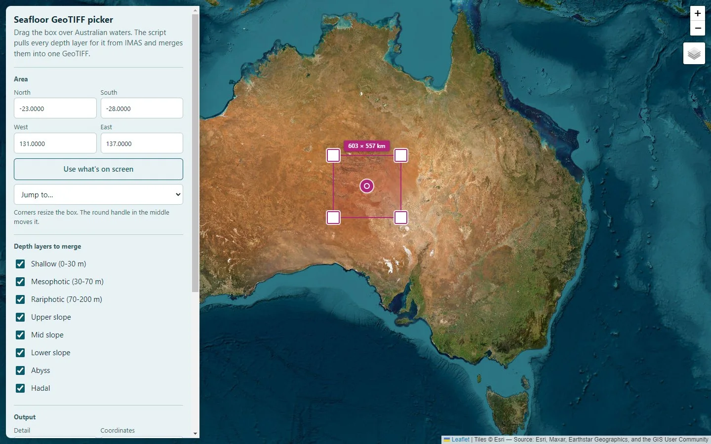
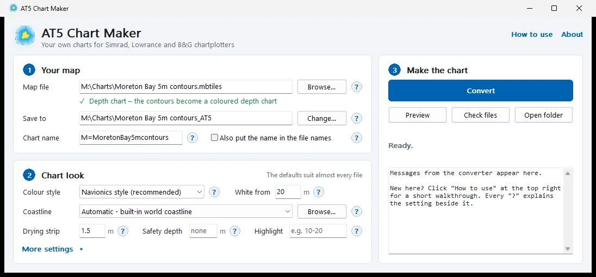
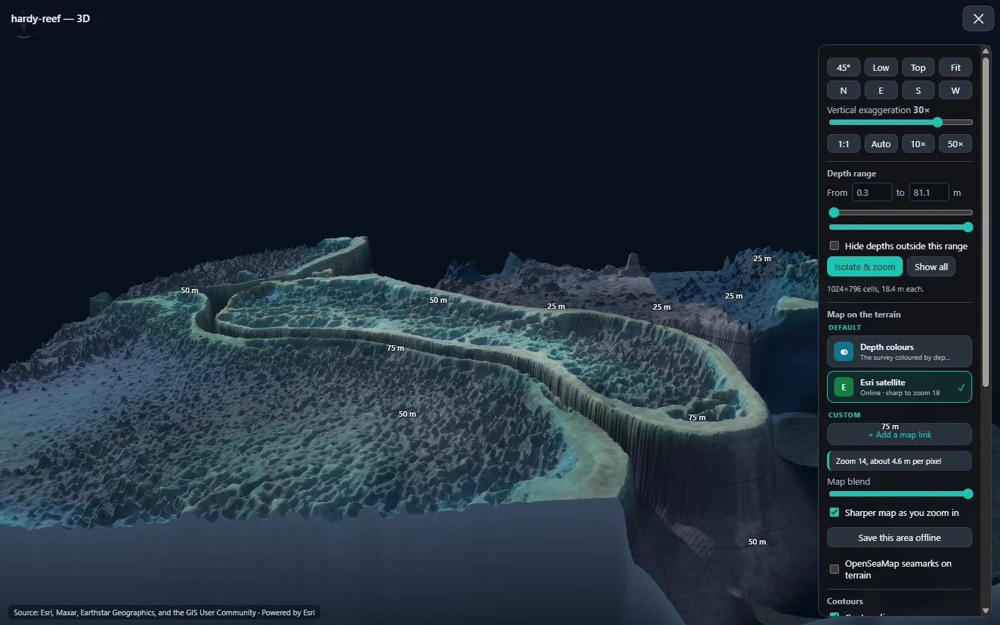
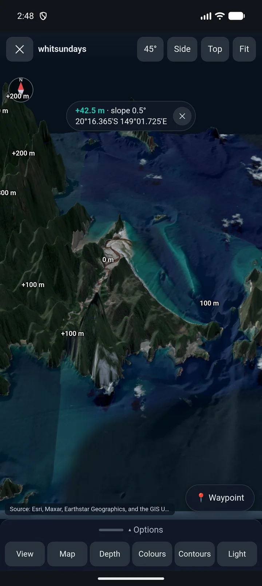
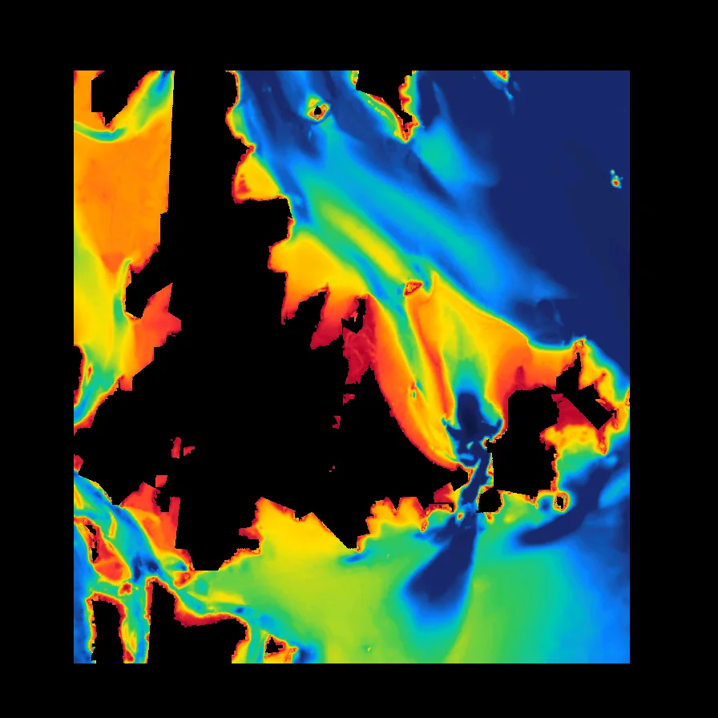

Android
SeaBathy
The seabed in your pocket. Surveys in 2D and 3D, offline maps, tides, sea conditions, routes and an anchor alarm.
Free & open source · Australian waters
Survey-grade bathymetry down to 10 m detail, a 3D seabed you can fly over, offline maps and charts for your plotter. No account, no subscription.

Seabed: IMAS 10 m bathymetry composite, CC BY 4.0. Live 3D, drag to turn.
Four apps · one toolkit
Android
The seabed in your pocket. Surveys in 2D and 3D, offline maps, tides, sea conditions, routes and an anchor alarm.
Windows
Plan on the big screen. The same maps, surveys and 3D, sharp to every pixel of the data.


Features

3D seabed
Fly over the survey in 3D, stretch the relief up to 100× and drape satellite imagery over it.

Depth colours
Palettes, relief shading and a depth range you set, so the structure you care about stands out.


Offline · conditions
Save maps, tides, wind, swell, currents and sea temperature before you leave the ramp.

Plan
Waypoints and routes with the survey depth checked along every leg. GPX in and out.

Chartplotter
Turn depth contours or coloured bathymetry into charts for Simrad, Lowrance and B&G units.
How it works
Draw a box in BathyPicker and download the survey for it.
Open it in SeaBathy on your phone or PC. Fly over it in 3D and drop marks.
Everything works offline on the phone, or goes onto your plotter with AT5 Chart Maker.
Open data
Free for everyone. Open source under the MIT licence.